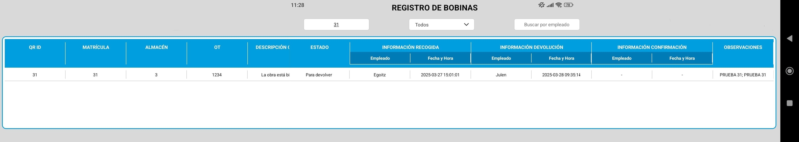
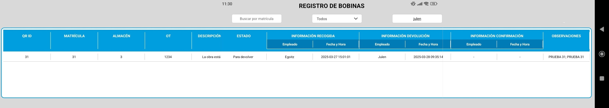

Visualizar todos los datos registrados en una tabla.
Filtrar los resultados por matrícula.
Filtrar los datos por estado.
Filtrar por empleado responsable.
¿Cómo Ver todos los datos?
Al pulsar el botón "Mostrar Todos los Datos", se abrirá una tabla que muestra
todas las bobinas registradas en el sistema.
Si has realizado algún filtrado, puedes volver a mostrar todos los resultados simplemente borrando el texto del campo de búsqueda.
La tabla se actualizará automáticamente en tiempo real, sin necesidad de salir de la pantalla o reiniciar la aplicación.
Filtrar por Matricula
Si la matrícula existe: se mostrarán los datos correspondientes a la bobina registrada con ese identificador.
Si la matrícula no existe: la tabla aparecerá vacía, indicando que no hay resultados asociados.

Filtrado por Estado
Al aplicar un filtro por estado, podrás visualizar únicamente las bobinas que se encuentran en uno de los siguientes estados:
Recibido: muestra las bobinas que han sido registradas como recién recibidas.
Para Devolver: muestra las bobinas que están pendientes de ser devueltas.
Devuelto: muestra las bobinas que ya han sido devueltas y están archivadas como tal.

Filtrar por Empleado
Si el empleado existe: se mostrarán todas las bobinas asociadas a dicho empleado.
Si el empleado no existe: la tabla no mostrará ningún resultado.